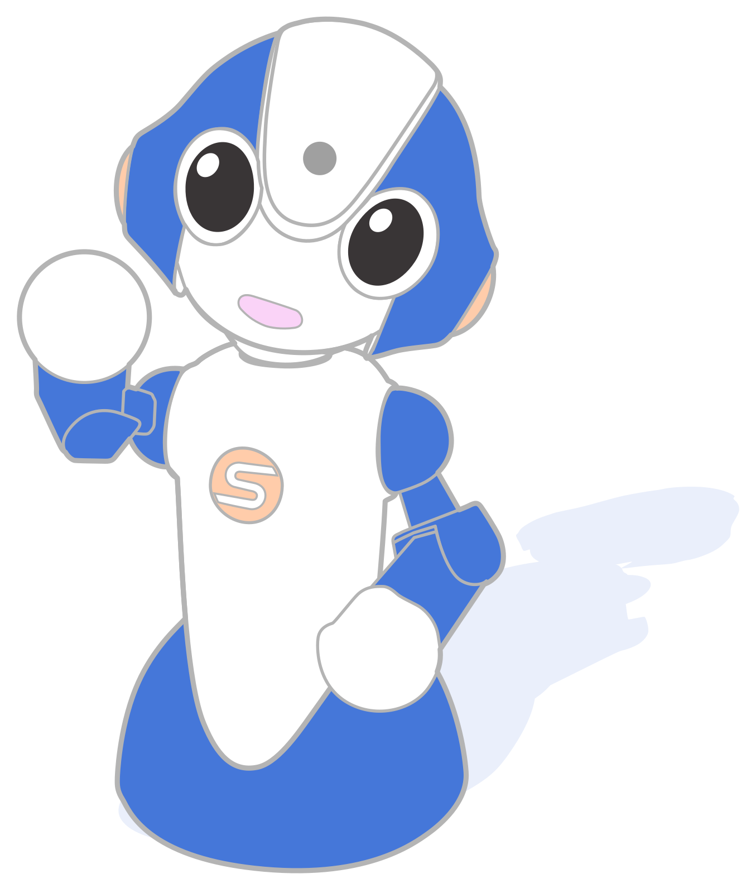

戻る
ホーム

Talk to Me
名前：
名前（カナ）：
性別：
女
男
都道府県：
JSが適用されたselect要素1
※デフォルト選択項目が無い場合は、未選択状態で表示する
選択してください
北海道
青森
秋田
岩手
山形
宮城
福島
栃木
群馬
茨城
埼玉
千葉
東京
神奈川
山梨
長野
新潟
富山
石川
福井
静岡
岐阜
愛知
三重
和歌山
奈良
滋賀
京都
大阪
兵庫
鳥取
岡山
島根
広島
山口
徳島
香川
愛媛
高知
福岡
佐賀
長崎
熊本
大分
宮崎
鹿児島
沖縄
 戻る
戻る ホーム
ホーム